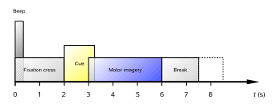

These are the results for the BCI IV competition dataset. It contains recordings from 22 electrodes with sampling frequency set at 250 Hz. The experiment follows the Motor Imagery paradigm, having 4 classes {left, right, hands, feet} with 72 trials each.
Each trial has the following time structure:
The figure below shows a 3D embedding using diffusion maps. Each point represents the covariance matrix of a short (one second) window during the "Motor Imagery" phase. If we consider only two classes at a time, we have for left and feet the following figure:
Considering all four classes, with colors set to left, right, hands, and feet, we have:
Here below we have the trajectory of the geometric mean in a sliding window (90% overlap) containing 250 points for the 'left' class. The colors go from beginning of trial to its end.
These are the results using a sliding window containing 125 points (90% overlap).